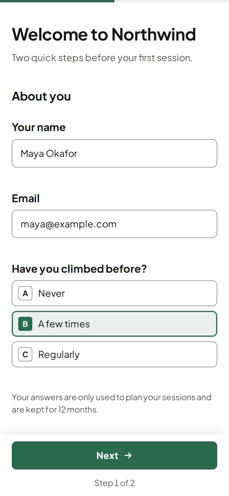

Your agent writes the form. quikform serves it.
A small open-source forms server. Your AI agent writes one JSON file, quikform checks it and serves a mobile-friendly form on your own domain. Every answer lands in a SQLite file your agent can read back.
- One executable
- Under 100 MB of RAM
- Works without JavaScript
- MIT licence
$ quikform form put \
--project northwind onboarding.json
ok onboarding v1
onboarding.json describes, as quikform renders it on a phone. Northwind Climbing is a sample brand.How it works
You describe the form in a sentence. Your agent does the rest with four commands.
Your agent writes a JSON file
Fields, steps, conditions, the thank-you message and the privacy note. No HTML, no scripts.
quikform checkreads itEvery mistake comes back with its exact path in the file, so the agent fixes it before anyone sees the form.
form putpublishes itThe form is live on your domain within ten seconds. Its version goes up each time the content changes.
Answers come back
Each answer is validated again on the server, saved to SQLite and, if you like, sent to a Telegram group.
quikform responsesgives them to your agent as JSON.
What people build with it
Anything you would otherwise collect by email or WhatsApp and copy out by hand.
-
Client onboarding
New members or clients answer once, on their phone, before the first meeting. Your agent reads the answers and prepares the session.
short_text · email · single_choice · yes_no -
A contact form for a static site
Link your site's “Contact” button to
email · long_textforms.yoursite.com/contact. Messages reach your Telegram and stay in your database. -
A questionnaire for one client
Prices, services, opening hours: everything an agent needs to know about a business, asked in steps instead of a long email thread. quikform's first real form was exactly this, for a gym.
number · multiple_choice · long_text -
Class or event sign-up
A public link to share in a group chat. A hidden trap field and a submission limit keep bots out.
short_text · email · single_choice -
Feedback after a job
A short form sent when the work is done. Follow-up questions appear only when an answer calls for them.
yes_no · long_text · showIf -
Requests your agent will handle
Quote requests, bookings, intake forms: the answers arrive as structured JSON, ready for the agent that acts on them.
responses --json
Why so small
- Why should a contact form need an account on someone else's service?
- Why should your agent click through a visual builder when it can write a file?
- Why should a forms server need gigabytes of memory and several databases?
- Why should your answers live anywhere but next to your project?
quikform keeps one JSON file per form and one SQLite file per project, on your server, behind the web server you already run. The field components are written once and tested, so every form your agent writes gets the same validation and the same comfort on a phone.
What's inside
Everything a form needs to be filled in on a phone and trusted on the server.
- Seven field types
- Short text, long text, email, number, single choice, multiple choice and yes/no. Each one can be required, have limits and help text, or appear only when another answer calls for it.
- Checked twice
quikform checkvalidates the definition before it goes live, and the server validates every submission again. A required field hidden by a condition never blocks the form.- Made for phones
- Short forms fit on one page; long ones split into steps with a progress bar. Labels stay visible, the keyboard matches the field, the button sits under the thumb. Answers in progress are kept in the browser until the form is sent.
- Works without JavaScript
- The page is rendered on the server. The small script only adds steps, live validation and conditional fields.
- Your brand, not ours
- Logo and accent colour per project, and no “powered by” badge. No trackers and no cookie banner.
- Alerts and privacy
- A Telegram message for each answer. A privacy note on every form, and answers deleted after 12 months by default.
- Four languages
- Interface text in English, French, German and Thai, set per form.
# one project per domain
$ quikform project init northwind \
--domain forms.northwind.example \
--accent "#2b6a4f"
# the agent's whole toolkit
$ quikform check onboarding.json
$ quikform form put --project northwind \
onboarding.json
$ quikform responses --project northwind --json
# the server, behind Caddy or any reverse proxy
$ quikform serve --port 8787Each command works on one project only. Exit codes: 0 success, 1 failure, 2 usage error.
Install
quikform builds from source with Bun 1.4 or later. The result is one file, dist/quikform, to copy onto your server.
It listens on 127.0.0.1 only: put Caddy or another reverse proxy in front for HTTPS. The README covers the systemd unit and the Caddy block.
$ git clone https://github.com/jonathanvouilloz/quikform
$ cd quikform
$ bun install
$ bun run build # writes dist/quikform
$ export QUIKFORM_HOME=~/.local/share/quikform
$ export QUIKFORM_SECRET=$(openssl rand -hex 32)
$ ./dist/quikform serveOpen source, MIT licence
The code, the form format and the issues are on GitHub. Fork it, host it, send a pull request.